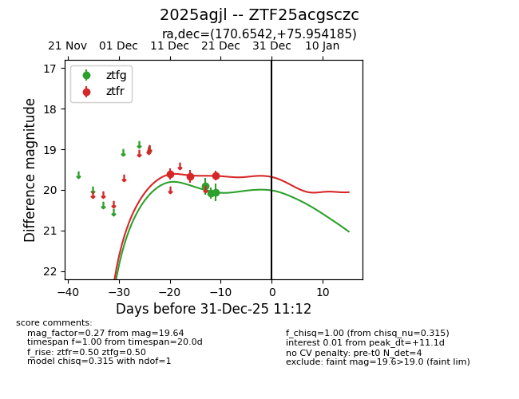
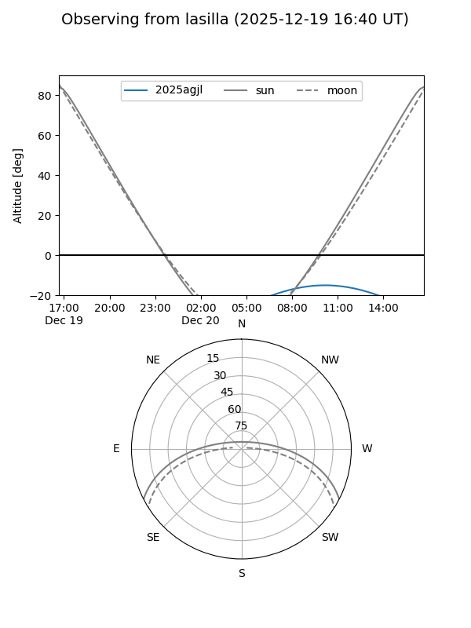
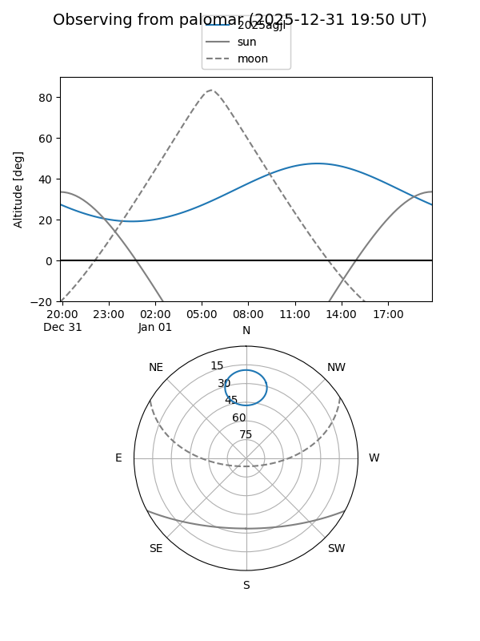
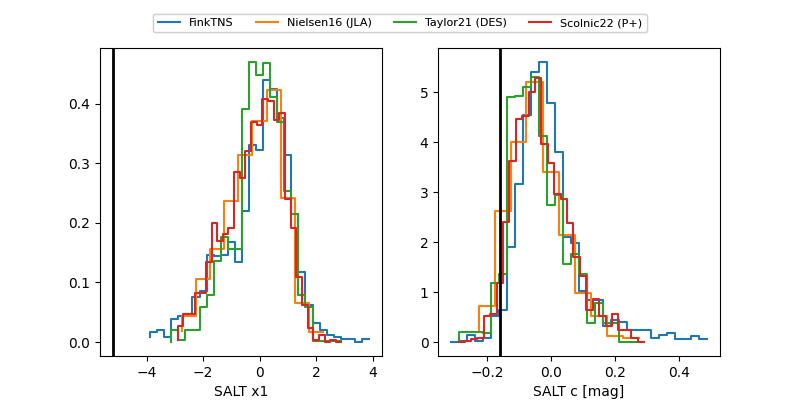

2025agjl
Target 2025agjl at 2025-12-31 18:00
Aliases and brokers:
FINK: link
Lasair: link
ALeRCE: link
TNS: link
YSE: link
alt names
ZTF25acgsczc (ztf,fink_ztf)
2025agjl (tns,yse)
Coordinates:
equatorial (ra, dec) = 170.6542,+75.95419
equatorial (HMS+DMS) = 11:22:37.00,+75:57:15.07
galactic (l, b) = (129.8052,+39.96574)
Flags:
Photometry:
last ztfg=20.06, ztfr=19.64
3 ztfg, 3 ztfr detections
Lightcurve

Visibility


Additional plots
